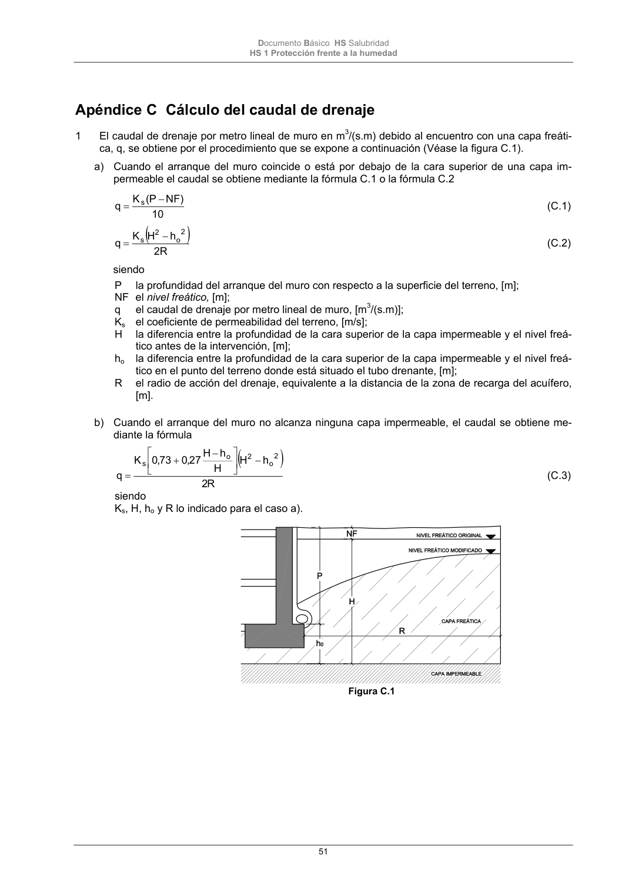

DB-HS · Página 51 · versión 2022-06-14
SHA256: 68df3caacc95f71aee2ec1ba7b2c65ae66155c21e3a8785521b8fdd4fd640d3b · página física 51 de 184 · métodos de encabezado
solo si están cotejados.
Formatos: Markdown · JSON de bloques · PDF p. 51 · imagen PNG
Documento Básico HS Salubridad HS 1 Protección frente a la humedad 51 Apéndice C Cálculo del caudal de drenaje 1 El caudal de drenaje por metro lineal de muro en m3/(s.m) debido al encuentro con una capa freáti- ca, q, se obtiene por el procedimiento que se expone a continuación (Véase la figura C.1). a) Cuando el arranque del muro coincide o está por debajo de la cara superior de una capa im- permeable el caudal se obtiene mediante la fórmula C.1 o la fórmula C.2 10 ) NF P ( K q s (C.1) 2R h H K q 2 o 2 s (C.2) siendo P la profundidad del arranque del muro con respecto a la superficie del terreno, [m]; NF el nivel freático, [m]; q el caudal de drenaje por metro lineal de muro, [m3/(s.m)]; Ks el coeficiente de permeabilidad del terreno, [m/s]; H la diferencia entre la profundidad de la cara superior de la capa impermeable y el nivel freá- tico antes de la intervención, [m]; ho la diferencia entre la profundidad de la cara superior de la capa impermeable y el nivel freá- tico en el punto del terreno donde está situado el tubo drenante, [m]; R el radio de acción del drenaje, equivalente a la distancia de la zona de recarga del acuífero, [m]. b) Cuando el arranque del muro no alcanza ninguna capa impermeable, el caudal se obtiene me- diante la fórmula R 2 h H H h H 27 ,0 73 ,0 K q 2 o 2 o s (C.3) siendo Ks, H, ho y R lo indicado para el caso a). Figura C.1
